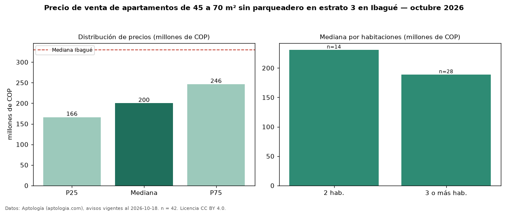

Precio de venta de apartamentos de 45 a 70 m² sin parqueadero en estrato 3 en Ibagué — octubre 2026
Con 42 avisos vigentes, el precio mediano de apartamentos de 45 a 70 m² sin parqueadero en estrato 3 en venta en Ibagué es COP 200 millones. Frente a la mediana de los apartamentos de 45 a 70 m² en estrato 3 en venta de Ibagué (COP 212 millones, n = 297), queda 6 % por debajo; este segmento reúne el 14 % de esos avisos. Por metro cuadrado, la mediana es COP 3,70 millones/m² (n = 40), 1 % por debajo de los apartamentos de 45 a 70 m² en estrato 3 en venta de Ibagué (COP 3,75 millones/m²). El área mediana anunciada es 55 m². El segmento con más oferta es el de 3 o más habitaciones (28 avisos, mediana COP 189 millones); pasar de 2 habitaciones a 3 o más habitaciones cambia la mediana −18 %. La administración mediana declarada es COP 178.000 al mes (n = 32). La mediana de todos los apartamentos en venta de Ibagué es COP 330 millones (−39 % de diferencia). La mitad central de los avisos va de COP 166 millones a COP 246 millones (razón 1,5), una dispersión moderada. Datos: Aptología (aptologia.com), CC BY 4.0 — https://www.aptologia.com/venta/ibague. Archivos: PDF, CSV con las cifras y gráfica PNG.

| Avisos únicos | 42 |
|---|---|
| Percentil 25 | COP 166.250.000 |
| Mediana | COP 200.000.000 |
| Percentil 75 | COP 246.250.000 |
| Mediana por m² | COP 3.701.923 |
Fuente: avisos vigentes de portales inmobiliarios recopilados por Aptología, deduplicados (mínimo 30 avisos únicos por celda). Precios pedidos, no cerrados. Fecha: 2026-10-18.